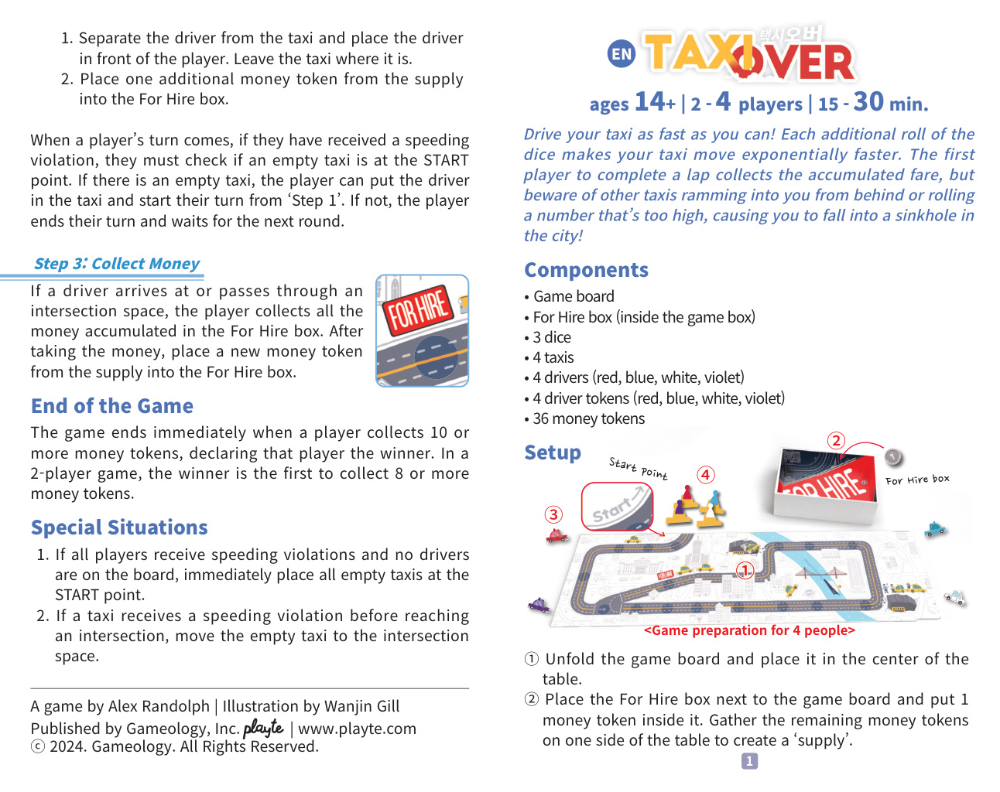
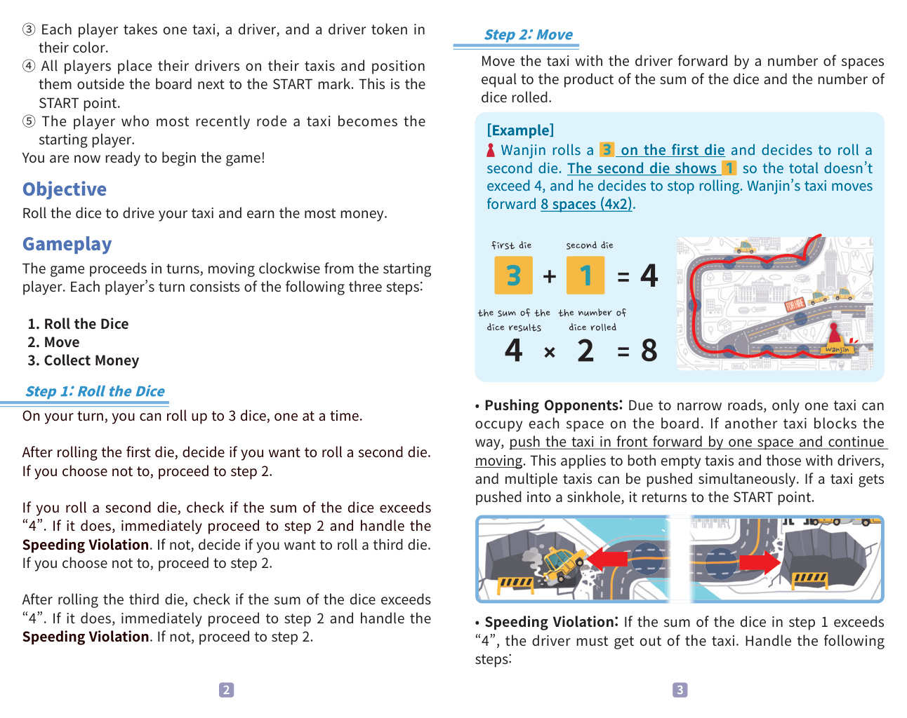

1简介
尽可能快地开你的出租车！每多掷一次骰子，你的出租车移动速度就会成倍增加。最先跑完一圈的玩家可以拿走所有累计的车资，但要小心被身后的出租车撞上——或者自己掷出太大的点数，掉进城市里的天坑！
原文：「驾驶 your taxi as fast as you can! 每位 additional roll of the dice makes your taxi move exponentially faster. The first player to complete a lap collects the accumulated fare, but beware of other taxis ramming into you from behind or rolling a number that's too high, causing you to fall into a sinkhole in the city!」
2配件
游戏板。
等候出租盒（位于游戏外盒内）。
3 颗骰子。
4 辆出租车。
4 名司机，颜色分别为红、蓝、白、紫。
4 个司机标记，颜色分别为红、蓝、白、紫。
36 枚钱币标记。
3准备
- 展开游戏板，平放在桌子中央。
- 把等候出租盒放在游戏板旁边，向盒内放 1 枚钱币标记。把其余钱币收集到桌子一侧，做成「供应区」。
- 每位玩家拿取同一颜色的 1 辆出租车、1 名司机、1 个司机标记。
- 所有玩家把司机放到自己的出租车上，并将它们并排放在游戏板外、靠近 起点 标记的位置。这一排位置即为「起点」。
- 最近坐过出租车（的士）的玩家成为起始玩家。

原书 准备 配图示意「<游戏 preparation for 4 people>」，并用序号 ①②③④ 标注关键位置：① 起点 标识、②For 雇佣 box、③ 起点、④ 棋子初始摆放。
4目标
掷骰子开动你的出租车，赚到最多的钱币。
5游戏流程
游戏按顺时针方向轮流进行，自起始玩家开始。每位玩家的回合包含以下三个步骤：
- 掷 the 骰子 / 掷骰
- 移动 / 移动
- 收钱 / 收钱
6步骤 1：掷骰
在你回合中，你可以一次掷 最多 3 颗骰子，每掷一颗停下决定是否继续。
掷完第一颗骰子后，决定是否掷第二颗。如果不再掷，则进入步骤 2。
如果掷了第二颗，检查两颗点数之和是否超过「4」：
- 如果超过，立即进入步骤 2，并处理 §9 超速违规。
- 如果没超过，决定是否掷第三颗。如果不再掷，则进入步骤 2。
掷完第三颗后，同样检查点数之和是否超过「4」：
- 如果超过，立即进入步骤 2，并处理 §9 超速违规。
- 如果没超过，进入步骤 2。
7步骤 2：移动
把载有司机的出租车向前移动，移动距离等于「点数之和 × 掷出的骰子数量」。
【示例】Wanjin 第一颗骰子掷出 3，决定掷第二颗。第二颗显示 1，总和不超过 4，于是他停止掷骰。Wanjin 的出租车向前移动 8 个格（4 × 2）。
原书示例公式图：
| 3 | + | 1 | = | 4 |
| first die second die | the sum of the dice results | |||
| 4 | × | 2 | = | 8 |
| the sum of the dice results the number of dice rolled | ||||

8推挤对手
由于道路狭窄，每个格子上同时只能有一辆出租车。如果前方有另一辆出租车挡住了去路，就把前方的出租车向前推一格并继续移动。此规则对空车和有司机的出租车同样适用，多辆车可以同时被推。若一辆出租车被推入天坑，则把它移回 起点。
9超速违规
如果在步骤 1 中骰子点数之和超过「4」，司机必须下出租车。
原文以「处理 the following steps:」一句引导，但在本规则书的可见版面内未列出后续具体步骤；其实际的处理动作分别见：
- §13 上回合遗留的处理（超速后该玩家下一回合如何重新上车）
- §12 特殊情形第 2 条（超速后空出租车移到招呼站）
10步骤 3：收钱
如果司机的出租车到达或经过一个 招呼站（招呼站），玩家从等候出租盒中拿走所有钱币标记。之后从供应区中向等候出租盒内放入 1 枚新的钱币标记。
11游戏结束
当一位玩家集齐 10 枚或更多钱币标记 时，游戏立即结束，该玩家获胜。
如果是 2 人局，则首先集齐 8 枚或更多 钱币标记的玩家获胜。
12特殊情形
- 1. 如果所有玩家都获得超速违规且没有司机在游戏板上，则立即把全部空出租车移回到 起点。
- 2. 如果一辆出租车获得超速违规时尚未到达招呼站，把这辆空出租车移动到最近的一个招呼站上。
13上回合遗留的处理
当一位玩家的回合到来时，如果他上一回合获得过超速违规，他必须先检查起点处是否有空出租车。
- 如果有空出租车，他可以让司机上车，并从「步骤 1」开始本回合。
- 如果没有空出租车，则本回合结束，等到下一轮再处理。
14制作信息
游戏设计（设计）：Alex Randolph
插画（插画）：Wanjin Gill
出版（出版）：Gameology, Inc. | playte | www.playte.com
ⓒ 2024. Gameology. 保留所有权利.